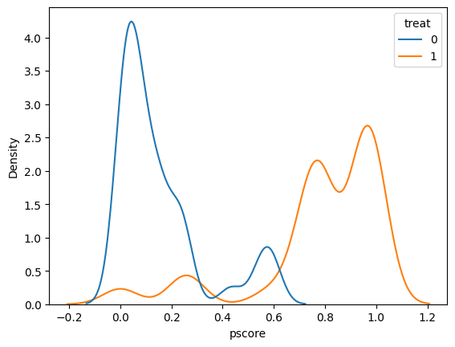
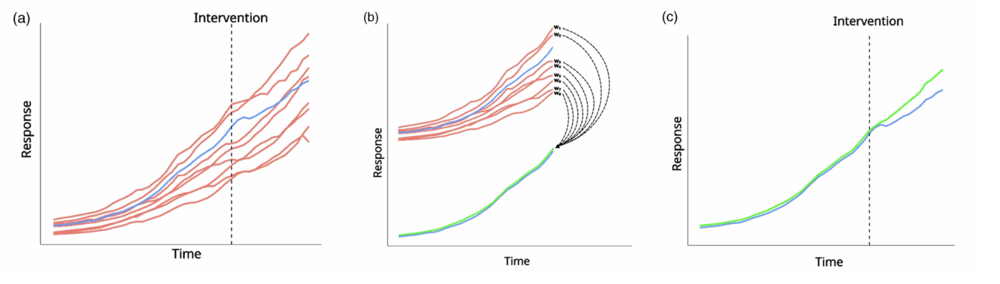
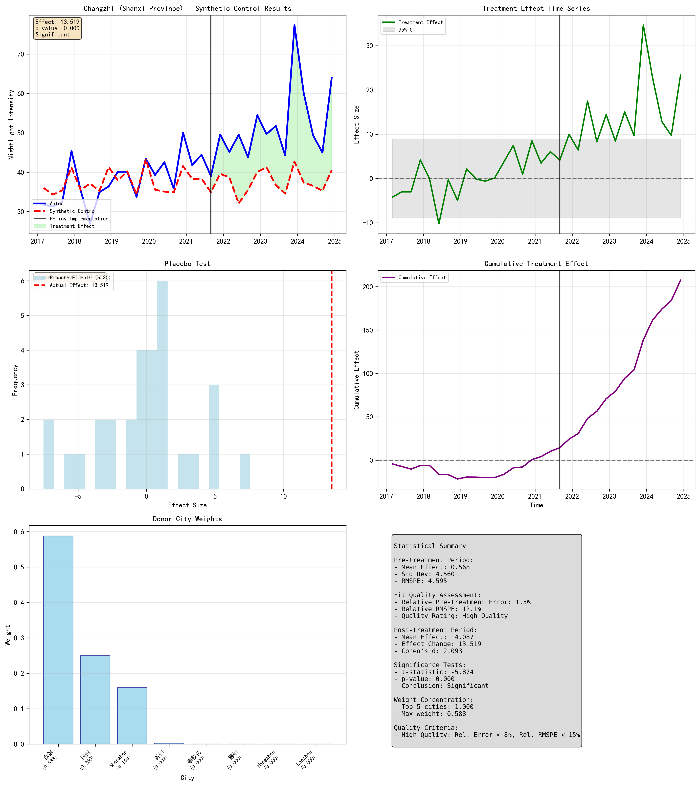
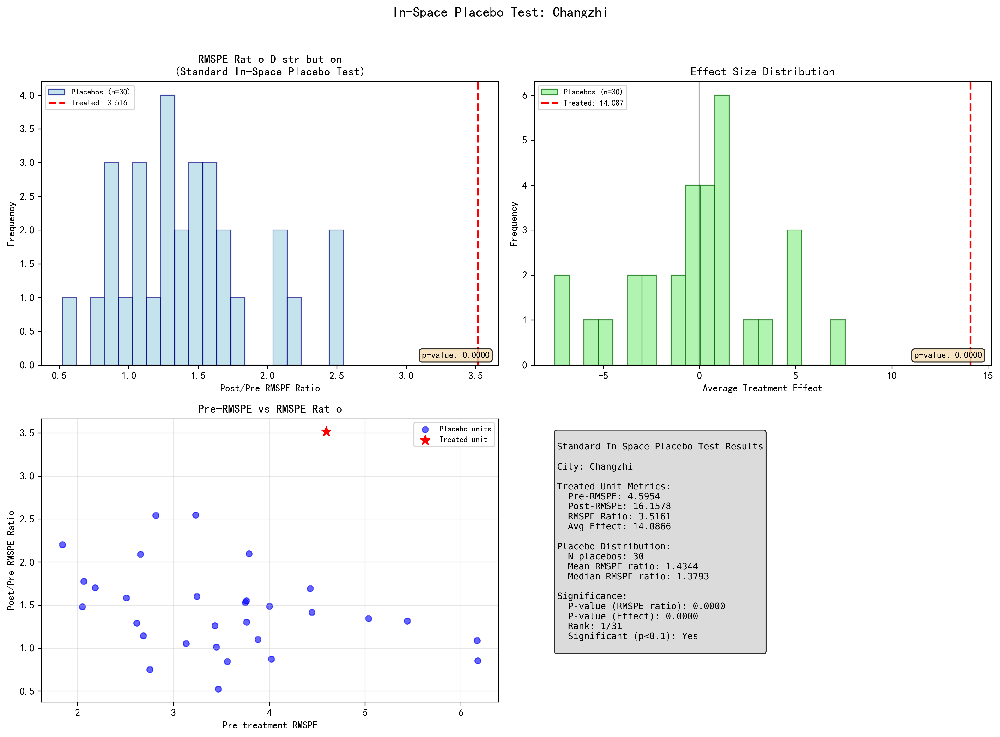
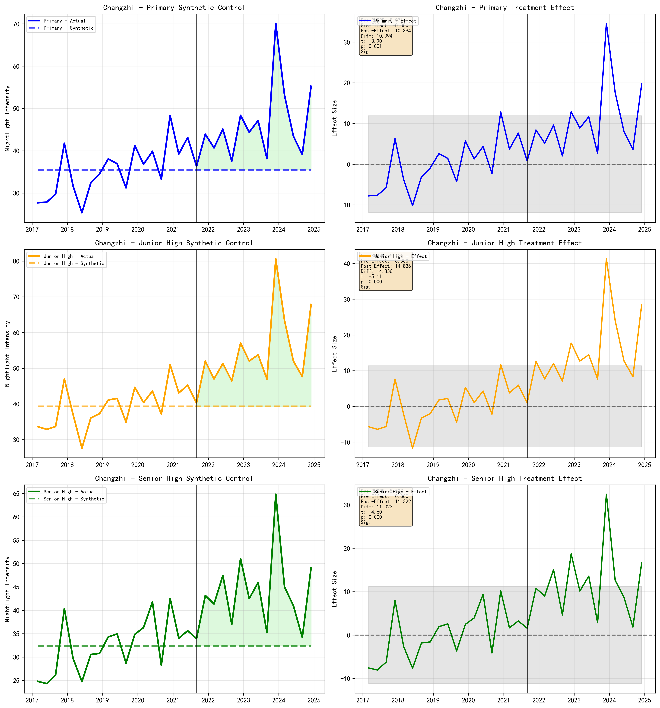

Research Question
Did China’s 2021 Double Reduction policy actually reduce student study burden, or did unchanged exam pressure and stakeholder incentives merely shift study activity across locations?
In July 2021, China implemented the Double Reduction (双减, shuang jian) policy, a comprehensive education reform targeting compulsory education (grades 1 through 9). The policy bans for-profit tutoring in core subjects, limits homework volume, and requires schools to provide after-school services. It directly affected millions of families, thousands of schools, and a tutoring industry previously valued at over $100 billion.
The question is grounded in public choice theory. The policy constrained tutoring hours and homework, but the underlying incentive structure (high-stakes exams, school evaluation criteria, parental competition) remained intact. In a principal-agent framework adapted for China’s hierarchical governance, rational actors facing unchanged incentives are predicted to substitute behaviors rather than reduce them: tutoring becomes “homework help,” group tutoring shifts to private or online forms, and wealthier families access premium substitutes while affordable options disappear.
The empirical move was to avoid survey self-report by using VIIRS satellite nighttime light intensity around schools and residential communities as a behavioral proxy. If students stayed later at school, school-area lights should rise. If study moved home, community lights should rise. If burden genuinely fell, both should decline.
The starting point was less technical: looking out late at night during high school, seeing lights across the city, and wondering how many students were still awake behind them.
Pilot Cities
The Ministry of Education designated 10 cities as Double Reduction pilot zones in July 2021.
- Beijing Capital, municipality
- Shanghai Municipality, east coast
- Shenyang Liaoning province capital, northeast
- Guangzhou Guangdong province capital, south
- Chengdu Sichuan province capital, southwest
- Zhengzhou Henan province capital, central
- Changzhi Shanxi province, mid-size inland city
- Weihai Shandong province, east coast
- Nantong Jiangsu province, Yangtze Delta
- Jinhua Zhejiang province, east
The control group comprises 30 to 31 non-pilot prefecture-level cities, selected to exclude cities with concurrent large-scale education policy interventions.
Research Journey
The initial design used a standard difference-in-differences (DID) specification comparing nighttime light around schools in the ten pilot cities against non-pilot controls, with city-month interactions and grade-level time interactions. Even after these additions, the parallel trends test was rejected at the 1% level (F-test p < 0.01). Treatment and control groups had systematically different light trajectories before the policy began.
The next attempt used propensity score matching (PSM-DID). Matching variables included pre-policy 12-month nighttime light trends, regional per capita GDP, population, and secondary/tertiary industry shares. The propensity score distributions barely overlapped: treatment schools concentrated at scores of 0.6 to 1.1, controls at 0 to 0.3. Even after strict matching, the parallel trends test still failed.

The pilot cities were selected for administrative and political reasons. They are among China’s largest and most economically distinct cities, and no amount of matching on observables could repair that structural difference. This led to the synthetic control method (Abadie, Diamond, and Hainmueller 2010), which constructs a weighted combination of donor cities to approximate each treated city’s pre-treatment trajectory. Instead of pre-selecting comparable cities, the data chooses the weights.
What Is Synthetic Control?
The synthetic control method (SCM) is a technique for estimating the causal effect of a policy or intervention when only one or a few units are treated. The core idea: take a group of untreated units and combine them with optimized weights to build a “synthetic” version of the treated unit that matches its pre-treatment behavior as closely as possible. After the intervention, any divergence between the actual treated unit and its synthetic counterpart is attributed to the treatment.

Formally, SCM solves the following optimization:
$$\min_{\mathbf{W}} \|\mathbf{X}_1 - \mathbf{X}_0 \mathbf{W}\|^2 \quad \text{s.t.} \quad w_j \geq 0, \quad \sum_{j=1}^{J} w_j = 1$$
Here $\mathbf{X}_1$ is a vector of pre-treatment characteristics (outcome values at key time points, plus covariates) for the treated unit. $\mathbf{X}_0$ is the corresponding matrix for the $J$ untreated donor units. $\mathbf{W} = (w_1, \ldots, w_J)$ is the weight vector. The constraints ensure that the synthetic control is a convex combination of real units, not an extrapolation.
In practice, SCM uses a nested optimization structure. An outer loop selects a diagonal matrix $\mathbf{V}$ that determines how much weight each feature receives in the matching. An inner loop, given $\mathbf{V}$, finds the donor weights $\mathbf{W}$ that minimize the $\mathbf{V}$-weighted distance between the treated unit and its synthetic counterpart. The outer loop then adjusts $\mathbf{V}$ to minimize the overall pre-treatment prediction error across all time periods.
Compared to DID, SCM does not require parallel trends. It lets the data choose which control units contribute, and how much. The trade-off is that SCM requires a good pre-treatment fit: if no weighted combination of donors can approximate the treated unit’s trajectory, the method breaks down.
How This SCM Was Built
The general framework above was applied to this case as follows, step by step.
Unit of analysis
The outcome variable is the mean nighttime light intensity (VIIRS avg_rade9h, in nW/cm²/sr) across all schools or communities within a given city, aggregated to the city-quarter level. Monthly data is averaged to quarters to reduce noise and align with economic covariates.
Feature construction
Following Abadie, Diamond, and Hainmueller, the feature vector for each city comprises three components: (1) nighttime light intensity at four strategically selected pre-treatment time points (the initial quarter, one-third point, two-thirds point, and the final pre-treatment quarter), capturing trajectory shape; (2) the pre-treatment mean of the outcome variable; and (3) pre-treatment averages of economic covariates including GDP, secondary industry ratio, and tertiary industry ratio. These economic variables capture each city’s development level and industrial structure.
Donor pool screening
Control cities are screened by data availability: minimum 4 pre-treatment periods with valid data, at least 80% coverage of the treatment city’s pre-treatment span, and no concurrent “Double Reduction“ pilot status. For school data, 31 cities passed screening; for community data, 30 cities.
Nested optimization
The inner optimization finds $\mathbf{W}$ using Sequential Least Squares Programming (SLSQP) with four initializations (one uniform, three random Dirichlet) to avoid local minima. The outer optimization selects $\mathbf{V}$ using the Nelder-Mead simplex algorithm (maximum 100 iterations) to minimize the mean squared prediction error across all pre-treatment periods, not just the selected lag points. Before optimization, all features are standardized to z-scores using the control group’s mean and standard deviation.
Placebo tests
Two complementary approaches are used for inference. The primary test is the standard in-space placebo (Abadie et al.): for each of the 30 control cities, the same SCM procedure is run as if that city were treated. The treated city’s RMSPE ratio (post-treatment RMSPE divided by pre-treatment RMSPE) is then compared against the full distribution of placebo ratios. If p < 0.1, the effect is considered significant: the treated city’s deviation is larger than what most control cities experienced. The secondary test is a bootstrap placebo, which draws 90 bootstrap samples from the pre-treatment residuals to assess whether the post-treatment effect exceeds what pre-treatment noise would predict.
The distinction matters. A city can pass bootstrap (it changed relative to its own pre-treatment noise) while failing in-space placebo (control cities also changed by comparable amounts). The combination “bootstrap passes, in-space fails” signals that something real happened but was not unique to the treated city.
Data
School Locations
School locations were retrieved via Baidu Maps API with broad school-related keywords, then cleaned to remove non-school places (bus stops, police stations named after schools), vocational and international schools, relocated or closed schools, and ethnic-minority schools. School types were verified through encyclopedia entries, official websites, news, and social media. Nine-year and twelve-year schools were reclassified; complete high schools with junior divisions were treated as junior high given the policy’s scope.
Final sample: treatment group 7,687 primary / 3,411 junior high / 628 senior high; control group 10,962 / 3,636 / 883.
Residential Communities
Communities from Macro Data Network (macrodatas.cn), a platform aggregating property management data. Selected by proximity to schools (800m for primary/junior high, 300m for senior high) or location in recognized education-resource-dense districts (Beijing Haidian, Shanghai Xuhui, and others). Built 2012 or earlier. Excluded: staff housing, dormitories, industrial parks, villas, boutique apartments, records without GPS. Final sample: 64,639 communities.
Nighttime Light
VIIRS DNB monthly composites (VCMCFG configuration) from NCEI/NOAA, 2017 to 2024. Outcome variable: average radiance after 9 PM (avg_rade9h, in nW/cm²/sr). Spatial resolution: approximately 463 meters per pixel. Pixels with cloud-free observation count of 2 or fewer were dropped. August 2022 uses NOAA-20 (JPSS-1) substitute data due to Suomi-NPP entering safe mode on July 26, 2022.
Findings
Post-policy changes in nighttime light are visible in many pilot cities, but broad causal attribution fails. COVID-19 (December 2019 through late 2022) overlaps almost entirely with the Double Reduction implementation period (July 2021 onward). If COVID affected cities heterogeneously (and it did, with pilot cities likely experiencing stricter lockdowns as large, politically visible metropolises), then the differential COVID impact is inseparable from any policy effect.
School Data Results (Table 1)
| City | ATT (Overall) | ATT Primary | ATT Jr. High | ATT Sr. High | RMSPE% | In-Space p | Rank | Bootstrap p | Max Weight | R² |
|---|---|---|---|---|---|---|---|---|---|---|
| Beijing | -0.848 | -0.820 | -0.218 | -1.017 | 11.674 | 0.300 | 10/31 | 0.344 | 0.456 | 0.057 |
| Changzhi | 0.991 | 0.333 | 0.953 | 4.691*** | 10.674 | 0.133 | 5/31 | 0.000*** | 0.324 | 0.509 |
| Chengdu | -4.796*** | -2.367*** | -3.470*** | -3.966*** | 11.712 | 0.167 | 6/31 | 0.000*** | 0.363 | 0.353 |
| Guangzhou | 0.984 | 0.735 | 1.673* | -0.493 | 8.892 | 0.400 | 13/31 | 0.000*** | 0.475 | 0.491 |
| Jinhua | -0.265 | 0.335 | -0.097 | 0.394 | 10.147 | 0.767 | 24/31 | 0.589 | 0.332 | 0.395 |
| Nantong | -1.188*** | -1.077*** | -1.081*** | -2.283*** | 6.193 | 0.167 | 6/31 | 0.000*** | 0.336 | 0.705 |
| Shanghai | -3.856** | -3.988** | -3.036* | -3.957** | 14.470 | 0.433 | 14/31 | 0.022** | 0.784 | -3.061 |
| Shenyang | -3.308*** | -3.578*** | -4.187** | -2.341*** | 7.620 | 0.300 | 10/31 | 0.000*** | 0.587 | 0.425 |
| Weihai | -3.240*** | -0.226 | -2.502*** | -0.193 | 12.906 | 0.200 | 7/31 | 0.000*** | 0.808 | 0.528 |
| Zhengzhou | -0.375 | -0.396 | -0.371 | 0.919 | 4.040 | 0.300 | 10/31 | 0.033** | 0.305 | 0.835 |
Community Data Results (Table 2)
| City | ATT (Overall) | ATT Primary | ATT Jr. High | ATT Sr. High | RMSPE% | In-Space p | Rank | Bootstrap p | Max Weight | R² |
|---|---|---|---|---|---|---|---|---|---|---|
| Beijing | -2.188 | -3.592* | -1.131 | 3.997 | 11.567 | 0.267 | 9/31 | 0.022** | 0.609 | -0.049 |
| Changzhi | 14.087*** | 9.184*** | 15.116*** | 11.529*** | 12.058 | 0.000*** | 1/31 | 0.000*** | 0.588 | 0.362 |
| Chengdu | -8.160*** | -7.599*** | -8.645*** | -9.636*** | 12.847 | 0.167 | 6/31 | 0.000*** | 0.666 | 0.364 |
| Guangzhou | 2.628** | 3.623*** | 1.957 | 1.449 | 9.749 | 0.467 | 15/31 | 0.000*** | 0.450 | 0.503 |
| Jinhua | 5.435** | 7.661*** | 2.193 | -1.211 | 13.628 | 0.400 | 13/31 | 0.000*** | 0.475 | 0.137 |
| Nantong | -2.479*** | -0.291 | -2.738*** | -1.519 | 5.982 | 0.467 | 15/31 | 0.000*** | 0.433 | 0.720 |
| Shanghai | -0.075* | -0.467 | -1.268** | 0.714 | 11.432 | 0.833 | 26/31 | 1.000 | 0.871 | -1.255 |
| Shenyang | 14.244*** | 12.489*** | 11.919*** | 17.153 | 19.790 | 0.300 | 10/31 | 0.000*** | 0.848 | -3.002 |
| Weihai | -1.313 | -0.536 | 0.180 | -0.087 | 8.087 | 0.433 | 14/31 | 0.133 | 0.658 | 0.547 |
| Zhengzhou | 2.514** | -0.162 | 2.452*** | 2.891 | 5.575 | 0.167 | 6/31 | 0.000*** | 0.300 | 0.614 |
Significance: * p < 0.1, ** p < 0.05, *** p < 0.01 (bootstrap). In-Space p threshold: ≤ 0.1. RMSPE% benchmark: ≤ 15%. R² applies to synthetic control fit quality.
Interpretation
Nearly all pilot cities show significant bootstrap changes but fail the in-space placebo test (p > 0.1). Their post-policy deviations cannot be distinguished from what control cities also experienced. The changes were real but not unique to treatment.
Changzhi is the sole city passing both placebo tests at the community level, with positive ATTs across all three school levels: primary +9.184, junior high +15.116 (the largest), and senior high +11.529. The in-space placebo rank is 1 out of 31. However, between 2021 and 2023, Changzhi undertook substantial educational infrastructure investment, constructing or expanding 46 schools and adding over 17,000 student seats. The observed increase in nighttime light intensity likely reflects construction activity and improved lighting rather than (or in addition to) behavioral substitution.
Shanghai presents a severely negative R² of -3.061 for school data, meaning the synthetic control performs worse than a simple mean prediction. Its nighttime light level is so far above any combination of donor cities that no credible synthetic control can be formed. The maximum donor weight reaches 0.784, indicating excessive reliance on a single city.



Testing the Proxy
Afterwards, a separate GIS exercise asked a deeper question: can VIIRS nighttime light, at this spatial and temporal resolution, actually detect school activity at all?
The exercise used 168 Shanghai high schools and monthly 2022 VIIRS data. During the April/May 2022 Shanghai lockdown, when schools were physically closed and city life severely restricted, high-school-area nighttime light did not collapse as the proxy hypothesis predicts. January averaged roughly 48.3 nW/cm²/sr, March 46.9, April 38.5, May 38.2, and August 32.3. The decline tracks seasonality and observation conditions far more than it tracks school closure. Central districts (Huangpu, Jing’an) remain structurally brighter than suburban districts regardless of school status, suggesting urbanization and infrastructure dominate the signal.
Three conclusions emerged:
- Seasonal factors dominate: the lowest months (July, August) are summer, not lockdown.
- At 463-meter resolution, student-generated light is drowned by street lighting, building facades, hospitals, logistics facilities, and residential base illumination.
- School-area brightness primarily reflects the urbanization level of the school’s location, not anything about student activity within it.


Reflections
The primary finding of this project is negative, and the negative finding is the point. Nighttime light data cannot serve as a valid proxy for student study activity. The reasons are structural rather than fixable with better data processing: VIIRS resolution is too coarse, urban base illumination overwhelms any student-generated signal, seasonal patterns dominate the time series, and the COVID-19 pandemic produced heterogeneous shocks that are temporally inseparable from the policy itself.
The methodological journey matters as much as the conclusion. DID failed because pilot city selection was politically driven and structurally non-random. PSM-DID failed because matching on observables cannot repair fundamental trend differences rooted in unobserved selection processes. SCM performed better in principle but could not overcome the COVID confound or the structural mismatch between megacity treatment units and smaller donor cities.
A better design for this question would need higher-frequency data, finer spatial resolution, and triangulation with other indicators: electricity consumption records, traffic patterns near schools, time-use surveys, or administrative data on tutoring registrations. The question itself (whether policy constraints on education reduce burden or merely redirect it) remains important and unanswered.
For my broader research trajectory, this project established a lesson that shaped everything after it: macro-level observable proxies cannot reliably penetrate individual-level states. The gap between what a satellite sees and what a student does is not just a measurement limitation. It is a conceptual warning about the relationship between observable traces and the phenomena we want them to represent.
Materials
Working paper. Standard Abadie-style SCM, in-space placebo tests, and the proxy-validity reframing.
Interactive monthly map of 2022 VIIRS nightlight across 168 Shanghai high schools.
Side-by-side monthly light trends for selected schools.